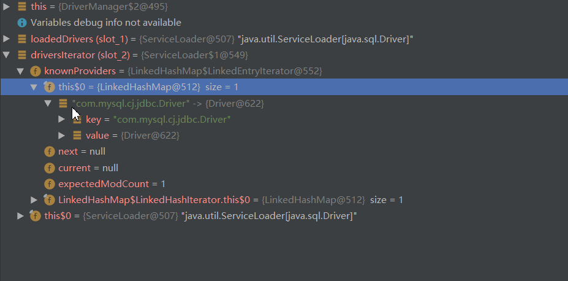

前言
我记得在我刚学Java的时候,需要连接Mysql的时候,还是需要Class.forName(“驱动名”);来手动的来加载驱动(可能现在还有人是这么加载的),再后来就使用框架了,什么Mybatis,Hibernate等一系列ORM框架,这些底层的东西就没人用了,可能也不太清楚现在是什么样子.事实是现在不再需要手动的加载驱动了,但是我们还是要知道为什么
Class.forName 与 SPI
为什么需要用Class.forName
这里说的是Mysql驱动之前的版本(4.0.0),为什么需要使用Class.forName来手动加载呢?正常触发类加载不行吗?我们知道,触发类初始化的方法有6个,也就是我们常说的主动使用,而最常见的就是使用new创建对象来触发初始化了,那为什么这里不能使用new呢?从我的理解来看,数据库有很多,而JDBC只是一个规范,它要求每个想要和Java交互的数据库必须按照我的规范编写驱动,而我们真正使用驱动的时候应该是使用DriverManager.getConnection("jdbc:xxxx:xxxxx");
在获得连接的传入的string中,我们会指定我们要连接的数据库和host,port等等, 问题在于DriverManager这个类是Java提供的,它总不能在你使用的时候去全局寻找你的外部驱动在哪里?并且使用一个import语句导入这个包,所以我们只能自己告诉Java我们的驱动名是什么,然后把它加载到JVM中.
SPI
上面说到我们不用再用Class.forName()来加载类,那么现在使用的是什么呢?这也是我们今天的主题: SPI.SPI是一个很重要的东西,这里默认就是指Java原生的SPI,不仅仅在Mysql驱动中. 如果想要了解下面的源码,就必须先了解SPI,我就不献丑了,提供一个链接,是我觉得不错的介绍SPI的 SPI介绍
源码分析
从哪里说起呢?应该是DriverManager中的一段静态代码块
static {
loadInitialDrivers();
println("JDBC DriverManager initialized");
}顾名思义,loadInitialDrivers()就是加载驱动的方法,点进去看一下:
private static void loadInitialDrivers() {
String drivers;
try {
drivers = AccessController.doPrivileged(new PrivilegedAction() {
public String run() {
return System.getProperty("jdbc.drivers");
}
});
} catch (Exception ex) {
drivers = null;
}
AccessController.doPrivileged(new PrivilegedAction() {
public Void run() {
ServiceLoader loadedDrivers = ServiceLoader.load(Driver.class);
Iterator driversIterator = loadedDrivers.iterator();
try{
while(driversIterator.hasNext()) {
driversIterator.next();
}
} catch(Throwable t) {
// Do nothing
}
return null;
}
});
println("DriverManager.initialize: jdbc.drivers = " + drivers);
if (drivers == null || drivers.equals("")) {
return;
}
String[] driversList = drivers.split(":");
println("number of Drivers:" + driversList.length);
for (String aDriver : driversList) {
try {
println("DriverManager.Initialize: loading " + aDriver);
Class.forName(aDriver, true,
ClassLoader.getSystemClassLoader());
} catch (Exception ex) {
println("DriverManager.Initialize: load failed: " + ex);
}
}
} 除去前面的判断之类的,看了上面介绍SPI的同学应该可以定位到重点的一句,ServiceLoader<Driver> loadedDrivers = ServiceLoader.load(Driver.class);
这就是通过SPI的方式将驱动类加载到JVM中,看一下效果

可以看到,驱动被放在driversIterator的knownProviders中,那就简单了,我们找到这个driversIterator,看一下:
public Iterator< S iterator() {
return new Iterator< S >() {
Iterator> knownProviders
= providers.entrySet().iterator();
public boolean hasNext() {
if (knownProviders.hasNext())
return true;
return lookupIterator.hasNext();
}
public S next() {
if (knownProviders.hasNext())
return knownProviders.next().getValue();
return lookupIterator.next();
}
public void remove() {
throw new UnsupportedOperationException();
}
};
} 然后看到这个knownProviders其实是从providers转换来的,那我们继续看providers是什么:private LinkedHashMap<String,S> providers = new LinkedHashMap<>();
是个LinkedHashMap 然后再这个类中搜一下,看哪里有put方法,找到了,只有一个地方,是在ServiceLoader下的LazyIterator内部类的nextService()方法中的两句:
S p = service.cast(c.newInstance());
providers.put(cn, p);可以看到,这里就是一个实例化驱动类并放在providers中,然后我们找一下,什么地方调用了这个nextService()方法,还是在LazyIterator内部类中:
public S next() {
if (acc == null) {
return nextService();
} else {
PrivilegedAction< S> action = new PrivilegedAction< S>() {
public S run() { return nextService(); }
};
return AccessController.doPrivileged(action, acc);
}
}然后再看一下什么地方创建了这个内部类,很容易找到了,还是在ServiceLoader类中的reload()方法,那么什么地方调用了reload()方法呢?在构造方法中,什么地方构造了ServiceLoader实例了,load()方法.
现在找到了所有的路线,但是肯定很晕,绕来绕去的,我们正向理一下
我们调用ServiceLoader.load()方法,ServiceLoader.load()内部构造了实例对象,然后调用了reload()方法,在reload()方法中,我们创建了LazyIterator内部类,并将类变量lookupIterator指向了这个内部类实例,当我们调用lookupIterator的next()方法时,就会将驱动类实例化并至于providers中,现在很清楚了,最后我们找到什么地方调用了lookupIterator.next()方法,其实上面也看到了,就在driversIterator中.
这里的东西可能很绕,但是仔细看是能看懂的.
后话
之所以分析这个源码,纯粹是因为好奇,在这里记录一下,希望可以帮助到你